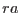
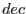

subroutine cartesianToSky(vector, ra, dec)
real(double), intent(in) :: vector(3)
real(double), intent(out) :: ra, dec
end subroutine cartesianToSky
Takes a vector of direction cosines and returns the corresponding celestial coordinates  and . NOTE and are in radians.